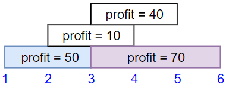
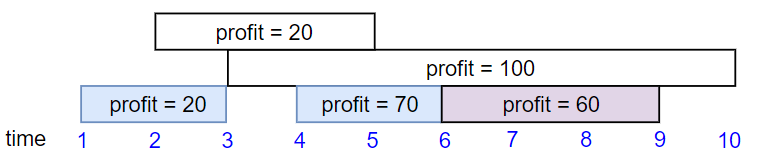
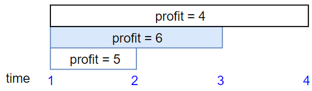

1235. 规划兼职工作
按结束时间排序后 DP：dp[i] = 前 i 份的最大报酬；选第 i 份就接在「结束 ≤ 它开始」的最优后缀上，二分找。
思路
- 工作按结束时间排序，
dp[i]= 只考虑前 i 份工作能拿到的最大报酬。 - 对第 i 份：不选 →
dp[i-1]；选 → 二分找结束时间 ≤ 它开始的份数lo，值 =dp[lo] + profit。 - 「结束 = 开始」可以接着干，所以二分比较用的是
<= s。 - 答案就是
dp[n]。
图解
最优解
1import java.util.*;2 3class Solution {4 public int jobScheduling(int[] startTime, int[] endTime, int[] profit) {5 int n = startTime.length;6 int[][] jobs = new int[n][3];7 for (int i = 0; i < n; i++) jobs[i] = new int[]{endTime[i], startTime[i], profit[i]};8 // 按结束时间排序：dp 到它时，与它冲突的选择都已成定局9 Arrays.sort(jobs, (a, b) -> a[0] - b[0]);10 // dp[i] = 只考虑前 i 份工作能拿到的最大报酬11 int[] dp = new int[n + 1];12 for (int i = 1; i <= n; i++) {13 int s = jobs[i - 1][1];14 // 二分找结束时间 <= s 的工作份数 lo：恰好相等也算不冲突15 int lo = 0, hi = i - 1;16 while (lo < hi) {17 int mid = (lo + hi + 1) >>> 1;18 if (jobs[mid - 1][0] <= s) lo = mid;19 else hi = mid - 1;20 }21 // 不选第 i 份 → dp[i-1]；选 → dp[lo] + 它的报酬22 dp[i] = Math.max(dp[i - 1], dp[lo] + jobs[i - 1][2]);23 }24 return dp[n];25 }26}题目
你打算利用空闲时间来做兼职工作赚些零花钱。
这里有 n 份兼职工作，每份工作预计从 startTime[i] 开始到 endTime[i] 结束，报酬为 profit[i]。
给你一份兼职工作表，包含开始时间 startTime，结束时间 endTime 和预计报酬 profit 三个数组，请你计算并返回可以获得的最大报酬。
注意，时间上出现重叠的 2 份工作不能同时进行。
如果你选择的工作在时间 X 结束，那么你可以立刻进行在时间 X 开始的下一份工作。
示例 1：

输入：startTime = [1,2,3,3], endTime = [3,4,5,6], profit = [50,10,40,70] 输出：120 解释： 我们选出第 1 份和第 4 份工作， 时间范围是 [1-3]+[3-6]，共获得报酬 120 = 50 + 70。
示例 2：

输入：startTime = [1,2,3,4,6], endTime = [3,5,10,6,9], profit = [20,20,100,70,60] 输出：150 解释： 我们选择第 1，4，5 份工作。 共获得报酬 150 = 20 + 70 + 60。
示例 3：

输入：startTime = [1,1,1], endTime = [2,3,4], profit = [5,6,4] 输出：6
提示：
1 <= startTime.length == endTime.length == profit.length <= 5 * 10^41 <= startTime[i] < endTime[i] <= 10^91 <= profit[i] <= 10^4
题面取自力扣当前版本。
数据快照 2026-11-04。题面版权归力扣所有，本站点仅供本人学习使用，请勿对外发布。